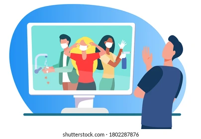
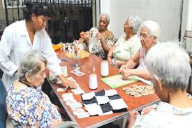
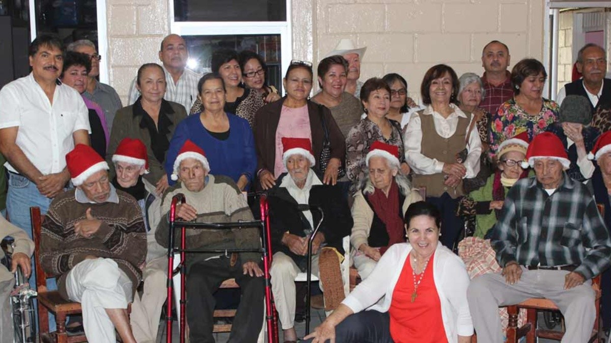

-
PRPOSITO DEL PEC: Fomentar en nuestros estudiantes la conciencia social yla sencibilizacion sobre el cuidado del adulto mayor de su comunidad.
FASE 1:
-
Los docentes por medio de un examen diagnostico buscaran entender la implicacion quen tienen los alumnos respecto a la problematica. Este sera aplicado a inicios del siguiente semestre y sera analizado en consejo tecnico.
FASE 2:
-

Los docentes por medio de actividades (Pelicula sobre el cuidado del adulto mayor crearan conciencia sobre los alumnos).
FASE 3:
-

Los alumnos crean un video reflejando esta problematica relacionada con la realidad (con sus propios abuelitos o adultos mayores cercanos a ellos).
FASE 4:
-
}
La primera visita se basara en tres actividades:
1."Historias de visitas"
2."Cartas al pasado"
3."Actividad manual"
FASE 5:
-

Se hara una investigacion sobre la linea de procesos de "articulos para adulto mayor" y sobre la importacion y exportcion de estos.
FASE 6:
-

Se realiza una segunda visita donde habra mas actividades dinamicas (entre ellas una posada), tambien se presentaran villancicos y se hara entrega de articulos para ayuda a los viejitos del lugar.